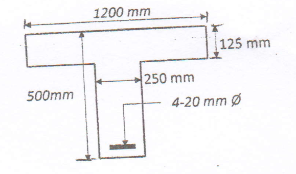
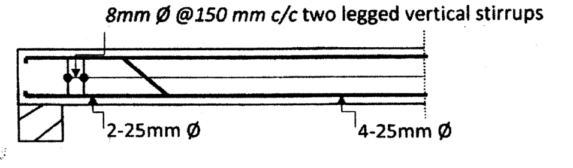

5.1 & 5.2 Shear Stress & Behaviour of Concrete under Shear 2080207820762075207220692065
PAST EXAM QUESTIONS:
- Explain the behaviour of concrete under shear with sketches. Explain the different conditions. [4] (2078 Bhadra, Q2a)
- How do bent-up bars contribute to the shear strength of a beam? Explain. [4] (2065 Shrawan, Q3a)
- Explain how an RC structural member subjected to bending, shear and torsion is designed by the IS code method. [5] (2076 Ashwin, Q5a)
- Explain how an RC structural member subjected to torsion, shear force and bending moment is designed. [6] (2072 Chaitra, Q4a)
- Explain how an RC structural member subjected to bending, shear and torsion is designed by the IS code method. [5] (2065 Kartik, Q4b)
- Describe the step-by-step procedure used for the design of an RC beam subjected to shear, moment and torsion. [6] (2075 Ashwin, Q2b)
- Write down the steps of design of a beam subjected to bending moment, shear force and torsion. [4] (2071 Chaitra, Q2a)
- A reinforced-concrete beam has an effective depth of 550 mm and a breadth of 400 mm. It contains 5 bars of 25 mm diameter, of which two are to be bent up at 45° near the support. The beam carries a uniformly distributed factored load of 100 kN/m over a clear span of 6 m. Calculate the shear resistance of the bent-up bars and design the additional stirrups, if required. Use M20 concrete and Fe415 steel. [10] (2080 Baishakh, Q2a)
- A reinforced-concrete beam has an effective depth of 550 mm and a breadth of 300 mm. It contains 4 bars of 20 mm diameter, of which two are to be bent up at 45° near the support. Calculate the shear resistance of the bent-up bars and design the additional stirrups needed when the factored shear force due to a uniformly distributed load is 425 kN at the support. The beam has a span of 6 m. Use M20 concrete and Fe415 (TOR) steel. [10] (2076 Chaitra, Q3b)
- An RC beam of effective depth 600 mm and breadth 400 mm contains five 25 mm bars, of which two are bent up at 45° near the support. Calculate the shear resistance of the bent-up bars and additional stirrups needed if the factored shear force is 250 kN at the support and zero at midspan of a 6 m span. Use M20 concrete and Fe415 steel. [14] (2075 Ashwin, Q2a)
- A rectangular reinforced-concrete beam has an overall depth of 500 mm and a breadth of 300 mm. It contains 5 bars of 25 mm diameter in tension and 3 bars of 16 mm diameter in compression. Calculate the shear reinforcement required to resist a factored shear force of 370 kN. Use M20 concrete and Fe415 (TOR) steel. [8] (2075 Chaitra, Q2a)
- Find the shear reinforcement required for the beam shown in the figure, subjected to a design shear force of 250 kN. Use M25 concrete and Fe500 steel. The supplied T-section has flange width 1200 mm, flange thickness 125 mm, web width 250 mm, effective depth 500 mm and four 20 mm tension bars. [6] (2072 Chaitra, Q1a)

Figure supplied with 2072 Chaitra Q1a. The 1200 mm dimension is flange width, not beam span. - A simply supported T-beam has a clear span of 6 m and carries a service load of 40 kN/m. It is reinforced with 4 bars of 20 mm diameter at the support, and its overall beam cross-section is 300 mm × 600 mm. Design the shear reinforcement near the support, considering the shear contribution of 2 bars of 20 mm diameter near the support. Use M20 concrete and Fe415 steel. [8] (2078 Bhadra, Q4b)
- Find the shear resisting capacity of a rectangular beam 300 mm × 500 mm at the section of bent-up bars inclined at 45°. Use M20 concrete and Fe415 steel. The supplied figure shows four 25 mm main bars, of which two are bent up, and two-legged 8 mm vertical stirrups at 150 mm centres. [10] (2069 Chaitra, Q2b)

Bent-up-bar and stirrup arrangement supplied with 2069 Chaitra Q2b. - Design the shear reinforcement for a simply supported beam of span 5.0 m having an effective size of 230 mm × 450 mm. It carries a central point load of 30 kN. It is reinforced with 4 bars of 16 mm diameter, of which one bar is bent, using Fe415 steel. Use two-legged vertical stirrups of 8 mm diameter. Take M20 grade concrete. [8] (2082 Baishakh, Q2b)
- A rectangular RC beam of size 250 mm × 500 mm effective depth is subjected to a factored shear force of 110 kN. It is reinforced with three 22 mm diameter bars in tension. Design the shear reinforcement. Use M20 concrete and Fe500 steel. [8] (2074 Ashwin, Q1c)
Q1. Explain the behaviour of concrete under shear with sketches. Explain the different conditions. [4] (2078 Bhadra, Q2a)
For an uncracked elastic section, shear stress follows τ = VQ/(Ib), where Q is the first moment of the area outside the level considered. A rectangular section has a parabolic shear distribution with a maximum at the neutral axis. The design quantity Vu/(bd), however, is a nominal average stress used with the code's empirical resistance values; it is not the elastic maximum shear stress.
Combining longitudinal stress σx with shear τ gives principal tensile stress σ1 = σx/2 + √[(σx/2)² + τ²] when transverse normal stress is neglected. In pure shear the principal stresses are +τ and −τ, acting on planes at 45°. This explains why concrete can crack diagonally even where the ordinary flexural tensile stress is small.
| Mechanism | Visible behaviour | Design implication |
|---|---|---|
| Flexural cracking | Approximately vertical cracks start at the tension face in a high-moment region. | Longitudinal reinforcement carries the flexural tension. |
| Flexure-shear cracking | A flexural crack turns diagonal toward the compression zone. | Provide properly anchored transverse steel crossing the inclined crack. |
| Web-shear cracking | Inclined cracks initiate in the web where shear is high and moment is relatively small. | Check the concrete's diagonal tensile resistance and stirrups near supports. |
| Diagonal compression failure | The compression field or strut crushes under excessive shear. | Respect τc,max; increasing stirrup quantity alone does not cure this failure. |
The nominal shear stress is τv = Vub·d. The concrete alone resists τc (IS 456 Table 19, a function of the steel ratio pt = 100Astb·d). If τv ≤ τc only nominal stirrups are needed; if τc < τv ≤ τc,max the excess Vus = Vu − τcbd is carried by steel; τv must never exceed τc,max (2.8/3.1/3.5 for M20/M25/M30).
For a T- or L-beam, use web width bw in the shear stress and reinforcement percentage. Count only tension steel that satisfies the code's continuation and anchorage requirements at the section considered. The full support steel may be counted only where the stated support-detailing conditions are met. Reducing the number of straight bars by bending some upward can change the steel percentage used to obtain τc.
Q2. How do bent-up bars contribute to the shear strength of a beam? Explain. [4] (2065 Shrawan, Q3a)
Vertical stirrups: Vus = 0.87fyvAsvd/sv, so sv = 0.87fyvAsvd/Vus. Here Asv is the sum of the effective stirrup-leg areas; a two-legged 8 mm stirrup has Asv = 2π(8)²/4 = 100.53 mm². Under the ordinary IS 456 shear provisions, do not take fyv greater than 415 N/mm², even when the longitudinal steel grade is Fe500.
Ordinary vertical-stirrup spacing must not exceed min(0.75d, 300 mm). The minimum reinforcement requirement Asv/sv ≥ 0.4b/(0.87fyv) also gives an upper bound on spacing. Use the smallest spacing allowed by strength, minimum reinforcement, spacing limits and any seismic requirements.
Inclined stirrups: Vus = 0.87fyvAsvd(sinα + cosα)/sv. One group of bent-up bars: Vb = 0.87fyAbsinα. The latter is the force crossing a particular potential crack, not a continuous contribution over the entire beam length.
Important limit: the credited bent-up-bar contribution must not exceed one-half of the required shear-reinforcement contribution Vus, not one-half of total Vu. Properly anchored stirrups must carry the balance. Bent-up bars are not a substitute for the closed hoops required in an earthquake-resisting beam.
- Obtain factored shear at the relevant section. The section at distance d from a support face is permitted only when the applicable loading and support conditions justify it; a concentrated load close to the support needs particular care.
- Calculate d, τv, the effective tension steel percentage and the concrete shear strength from Table 19.
- Compare τv with Table 20's τc,max. If it exceeds this limit, revise the section/materials rather than continuing a stirrup calculation.
- Calculate Vus = max(0, Vu − τcbd). Deduct only a permitted, properly located and anchored bent-up-bar contribution.
- Select stirrup diameter and number of legs; calculate spacing and round down to a practical value.
- Check minimum reinforcement, maximum spacing, anchorage and the longitudinal bar arrangement. Show the length of each close-spaced support zone and the central zone on the drawing.
| Exam | Data | Result |
|---|---|---|
| 2075 Chaitra | 300×500, d 450, Vu 370, 5−25, M20 | τv=2.74, pt=1.82, τc=0.76 ⇒ Vus=267 kN; 8 mm 2-legged @ 60 mm |
| 2072 Chaitra | Verified T-section: bw = 250 mm, d = 500 mm, four 20 mm tension bars, Vu = 250 kN, M25. | τv = 2.000 MPa; pt = 1.0053%; τc = 0.6413 MPa. Vus = 169.84 kN; two-legged 8 mm stirrups need s ≤ 106.86 mm. Adopt 100 mm centres, with proper anchorage and steel continuation. |
Q3. Explain how an RC structural member subjected to bending, shear and torsion is designed by the IS code method. [5] (2076 Ashwin, Q5a)
Begin with the compatible design bending moment, shear force and torsional moment at the same section. Distinguish already factored actions from service loads, identify the tension face and establish the overall/effective depths.
IS 456 replaces torsion Tu by equivalent bending and shear on the section:
Equivalent moment Me1 = Mu + Mt, Mt = Tu·1 + D/b1.7 · Equivalent shear Ve = Vu + 1.6 Tub
Longitudinal steel is designed for Me1 (and Me2 = Mt − Mu on the opposite face if it is positive). The equivalent shear stress τve = Veb·d is resisted by closed stirrups designed for both shear and torsion.
Torsion produces diagonal cracks around the perimeter. After cracking, longitudinal bars, closed transverse reinforcement and diagonal concrete compression form a space-truss action. Open stirrups cannot provide the required closed tension path. Distinguish equilibrium torsion, necessary for load equilibrium, from compatibility torsion that may redistribute in an indeterminate system only when the applicable design assumptions permit it.
Use the overall depth D in Mt, but effective depth d in τve. Convert Tu from kN·m to N·mm when b is in millimetres. For hogging bending, the principal flexural tension steel belongs at the top. Always check τve ≤ τc,max before designing steel.
| Exam | Mu, Tu, Vu | Me1 | Ve | τve |
|---|---|---|---|---|
| 2081 Baishakh | 100 / 28 / 100 | 137.8 kN·m | 205.4 kN | 0.967 for assumed d = 500 mm |
| 2082 Bhadra | 400 / 150 / 110 | 653.7 kN·m | 710 kN | 2.536 for assumed d = 700 mm |
| 2080 Bhadra | 100 / 15 / 80 | 126.5 kN·m | 200 kN | 2.778 for assumed d = 360 mm |
In addition to the equivalent-shear requirement, IS 456 requires the transverse steel for the torsional mechanism. With b1 and d1 the centre-to-centre distances between the relevant corner longitudinal bars, use:
Asv/s ≥ Tu/(b1d1 × 0.87fyv) + Vu/(2.5d1 × 0.87fyv)
Asv/s ≥ (τve − τc)b/(0.87fyv)
Take the larger demand and satisfy minimum reinforcement. Torsion stirrup spacing must also comply with the code limits based on the short closed-stirrup dimension x1, (x1 + y1)/4 and 300 mm, as well as the applicable shear/seismic spacing. Do not substitute overall beam width/depth for b1, d1 or the actual stirrup dimensions.
Provide at least one longitudinal bar at each corner of the closed links. Distribute additional longitudinal reinforcement around the perimeter where required; under torsion, cross-sectional dimensions exceeding 450 mm require attention to the additional side-face reinforcement provisions. Anchor both longitudinal and transverse bars to develop the assumed forces.
After designing the equivalent bending reinforcement, recheck the provided section by force equilibrium and the tensile-strain limit. Check the equivalent maximum shear stress before sizing closed links. Finish with corner/side reinforcement, anchorage, crack control and the actual cage arrangement.
Q4. Explain how an RC structural member subjected to torsion, shear force and bending moment is designed. [6] (2072 Chaitra, Q4a)
Begin with the compatible design bending moment, shear force and torsional moment at the same section. Distinguish already factored actions from service loads, identify the tension face and establish the overall/effective depths.
IS 456 replaces torsion Tu by equivalent bending and shear on the section:
Equivalent moment Me1 = Mu + Mt, Mt = Tu·1 + D/b1.7 · Equivalent shear Ve = Vu + 1.6 Tub
Longitudinal steel is designed for Me1 (and Me2 = Mt − Mu on the opposite face if it is positive). The equivalent shear stress τve = Veb·d is resisted by closed stirrups designed for both shear and torsion.
Torsion produces diagonal cracks around the perimeter. After cracking, longitudinal bars, closed transverse reinforcement and diagonal concrete compression form a space-truss action. Open stirrups cannot provide the required closed tension path. Distinguish equilibrium torsion, necessary for load equilibrium, from compatibility torsion that may redistribute in an indeterminate system only when the applicable design assumptions permit it.
Use the overall depth D in Mt, but effective depth d in τve. Convert Tu from kN·m to N·mm when b is in millimetres. For hogging bending, the principal flexural tension steel belongs at the top. Always check τve ≤ τc,max before designing steel.
| Exam | Mu, Tu, Vu | Me1 | Ve | τve |
|---|---|---|---|---|
| 2081 Baishakh | 100 / 28 / 100 | 137.8 kN·m | 205.4 kN | 0.967 for assumed d = 500 mm |
| 2082 Bhadra | 400 / 150 / 110 | 653.7 kN·m | 710 kN | 2.536 for assumed d = 700 mm |
| 2080 Bhadra | 100 / 15 / 80 | 126.5 kN·m | 200 kN | 2.778 for assumed d = 360 mm |
In addition to the equivalent-shear requirement, IS 456 requires the transverse steel for the torsional mechanism. With b1 and d1 the centre-to-centre distances between the relevant corner longitudinal bars, use:
Asv/s ≥ Tu/(b1d1 × 0.87fyv) + Vu/(2.5d1 × 0.87fyv)
Asv/s ≥ (τve − τc)b/(0.87fyv)
Take the larger demand and satisfy minimum reinforcement. Torsion stirrup spacing must also comply with the code limits based on the short closed-stirrup dimension x1, (x1 + y1)/4 and 300 mm, as well as the applicable shear/seismic spacing. Do not substitute overall beam width/depth for b1, d1 or the actual stirrup dimensions.
Provide at least one longitudinal bar at each corner of the closed links. Distribute additional longitudinal reinforcement around the perimeter where required; under torsion, cross-sectional dimensions exceeding 450 mm require attention to the additional side-face reinforcement provisions. Anchor both longitudinal and transverse bars to develop the assumed forces.
After designing the equivalent bending reinforcement, recheck the provided section by force equilibrium and the tensile-strain limit. Check the equivalent maximum shear stress before sizing closed links. Finish with corner/side reinforcement, anchorage, crack control and the actual cage arrangement.
Q5. Explain how an RC structural member subjected to bending, shear and torsion is designed by the IS code method. [5] (2065 Kartik, Q4b)
Begin with the compatible design bending moment, shear force and torsional moment at the same section. Distinguish already factored actions from service loads, identify the tension face and establish the overall/effective depths.
IS 456 replaces torsion Tu by equivalent bending and shear on the section:
Equivalent moment Me1 = Mu + Mt, Mt = Tu·1 + D/b1.7 · Equivalent shear Ve = Vu + 1.6 Tub
Longitudinal steel is designed for Me1 (and Me2 = Mt − Mu on the opposite face if it is positive). The equivalent shear stress τve = Veb·d is resisted by closed stirrups designed for both shear and torsion.
Torsion produces diagonal cracks around the perimeter. After cracking, longitudinal bars, closed transverse reinforcement and diagonal concrete compression form a space-truss action. Open stirrups cannot provide the required closed tension path. Distinguish equilibrium torsion, necessary for load equilibrium, from compatibility torsion that may redistribute in an indeterminate system only when the applicable design assumptions permit it.
Use the overall depth D in Mt, but effective depth d in τve. Convert Tu from kN·m to N·mm when b is in millimetres. For hogging bending, the principal flexural tension steel belongs at the top. Always check τve ≤ τc,max before designing steel.
| Exam | Mu, Tu, Vu | Me1 | Ve | τve |
|---|---|---|---|---|
| 2081 Baishakh | 100 / 28 / 100 | 137.8 kN·m | 205.4 kN | 0.967 for assumed d = 500 mm |
| 2082 Bhadra | 400 / 150 / 110 | 653.7 kN·m | 710 kN | 2.536 for assumed d = 700 mm |
| 2080 Bhadra | 100 / 15 / 80 | 126.5 kN·m | 200 kN | 2.778 for assumed d = 360 mm |
In addition to the equivalent-shear requirement, IS 456 requires the transverse steel for the torsional mechanism. With b1 and d1 the centre-to-centre distances between the relevant corner longitudinal bars, use:
Asv/s ≥ Tu/(b1d1 × 0.87fyv) + Vu/(2.5d1 × 0.87fyv)
Asv/s ≥ (τve − τc)b/(0.87fyv)
Take the larger demand and satisfy minimum reinforcement. Torsion stirrup spacing must also comply with the code limits based on the short closed-stirrup dimension x1, (x1 + y1)/4 and 300 mm, as well as the applicable shear/seismic spacing. Do not substitute overall beam width/depth for b1, d1 or the actual stirrup dimensions.
Provide at least one longitudinal bar at each corner of the closed links. Distribute additional longitudinal reinforcement around the perimeter where required; under torsion, cross-sectional dimensions exceeding 450 mm require attention to the additional side-face reinforcement provisions. Anchor both longitudinal and transverse bars to develop the assumed forces.
After designing the equivalent bending reinforcement, recheck the provided section by force equilibrium and the tensile-strain limit. Check the equivalent maximum shear stress before sizing closed links. Finish with corner/side reinforcement, anchorage, crack control and the actual cage arrangement.
Q6. Describe the step-by-step procedure used for the design of an RC beam subjected to shear, moment and torsion. [6] (2075 Ashwin, Q2b)
Begin with the compatible design bending moment, shear force and torsional moment at the same section. Distinguish already factored actions from service loads, identify the tension face and establish the overall/effective depths.
IS 456 replaces torsion Tu by equivalent bending and shear on the section:
Equivalent moment Me1 = Mu + Mt, Mt = Tu·1 + D/b1.7 · Equivalent shear Ve = Vu + 1.6 Tub
Longitudinal steel is designed for Me1 (and Me2 = Mt − Mu on the opposite face if it is positive). The equivalent shear stress τve = Veb·d is resisted by closed stirrups designed for both shear and torsion.
Torsion produces diagonal cracks around the perimeter. After cracking, longitudinal bars, closed transverse reinforcement and diagonal concrete compression form a space-truss action. Open stirrups cannot provide the required closed tension path. Distinguish equilibrium torsion, necessary for load equilibrium, from compatibility torsion that may redistribute in an indeterminate system only when the applicable design assumptions permit it.
Use the overall depth D in Mt, but effective depth d in τve. Convert Tu from kN·m to N·mm when b is in millimetres. For hogging bending, the principal flexural tension steel belongs at the top. Always check τve ≤ τc,max before designing steel.
| Exam | Mu, Tu, Vu | Me1 | Ve | τve |
|---|---|---|---|---|
| 2081 Baishakh | 100 / 28 / 100 | 137.8 kN·m | 205.4 kN | 0.967 for assumed d = 500 mm |
| 2082 Bhadra | 400 / 150 / 110 | 653.7 kN·m | 710 kN | 2.536 for assumed d = 700 mm |
| 2080 Bhadra | 100 / 15 / 80 | 126.5 kN·m | 200 kN | 2.778 for assumed d = 360 mm |
In addition to the equivalent-shear requirement, IS 456 requires the transverse steel for the torsional mechanism. With b1 and d1 the centre-to-centre distances between the relevant corner longitudinal bars, use:
Asv/s ≥ Tu/(b1d1 × 0.87fyv) + Vu/(2.5d1 × 0.87fyv)
Asv/s ≥ (τve − τc)b/(0.87fyv)
Take the larger demand and satisfy minimum reinforcement. Torsion stirrup spacing must also comply with the code limits based on the short closed-stirrup dimension x1, (x1 + y1)/4 and 300 mm, as well as the applicable shear/seismic spacing. Do not substitute overall beam width/depth for b1, d1 or the actual stirrup dimensions.
Provide at least one longitudinal bar at each corner of the closed links. Distribute additional longitudinal reinforcement around the perimeter where required; under torsion, cross-sectional dimensions exceeding 450 mm require attention to the additional side-face reinforcement provisions. Anchor both longitudinal and transverse bars to develop the assumed forces.
After designing the equivalent bending reinforcement, recheck the provided section by force equilibrium and the tensile-strain limit. Check the equivalent maximum shear stress before sizing closed links. Finish with corner/side reinforcement, anchorage, crack control and the actual cage arrangement.
Q7. Write down the steps of design of a beam subjected to bending moment, shear force and torsion. [4] (2071 Chaitra, Q2a)
Begin with the compatible design bending moment, shear force and torsional moment at the same section. Distinguish already factored actions from service loads, identify the tension face and establish the overall/effective depths.
IS 456 replaces torsion Tu by equivalent bending and shear on the section:
Equivalent moment Me1 = Mu + Mt, Mt = Tu·1 + D/b1.7 · Equivalent shear Ve = Vu + 1.6 Tub
Longitudinal steel is designed for Me1 (and Me2 = Mt − Mu on the opposite face if it is positive). The equivalent shear stress τve = Veb·d is resisted by closed stirrups designed for both shear and torsion.
Torsion produces diagonal cracks around the perimeter. After cracking, longitudinal bars, closed transverse reinforcement and diagonal concrete compression form a space-truss action. Open stirrups cannot provide the required closed tension path. Distinguish equilibrium torsion, necessary for load equilibrium, from compatibility torsion that may redistribute in an indeterminate system only when the applicable design assumptions permit it.
Use the overall depth D in Mt, but effective depth d in τve. Convert Tu from kN·m to N·mm when b is in millimetres. For hogging bending, the principal flexural tension steel belongs at the top. Always check τve ≤ τc,max before designing steel.
| Exam | Mu, Tu, Vu | Me1 | Ve | τve |
|---|---|---|---|---|
| 2081 Baishakh | 100 / 28 / 100 | 137.8 kN·m | 205.4 kN | 0.967 for assumed d = 500 mm |
| 2082 Bhadra | 400 / 150 / 110 | 653.7 kN·m | 710 kN | 2.536 for assumed d = 700 mm |
| 2080 Bhadra | 100 / 15 / 80 | 126.5 kN·m | 200 kN | 2.778 for assumed d = 360 mm |
In addition to the equivalent-shear requirement, IS 456 requires the transverse steel for the torsional mechanism. With b1 and d1 the centre-to-centre distances between the relevant corner longitudinal bars, use:
Asv/s ≥ Tu/(b1d1 × 0.87fyv) + Vu/(2.5d1 × 0.87fyv)
Asv/s ≥ (τve − τc)b/(0.87fyv)
Take the larger demand and satisfy minimum reinforcement. Torsion stirrup spacing must also comply with the code limits based on the short closed-stirrup dimension x1, (x1 + y1)/4 and 300 mm, as well as the applicable shear/seismic spacing. Do not substitute overall beam width/depth for b1, d1 or the actual stirrup dimensions.
Provide at least one longitudinal bar at each corner of the closed links. Distribute additional longitudinal reinforcement around the perimeter where required; under torsion, cross-sectional dimensions exceeding 450 mm require attention to the additional side-face reinforcement provisions. Anchor both longitudinal and transverse bars to develop the assumed forces.
After designing the equivalent bending reinforcement, recheck the provided section by force equilibrium and the tensile-strain limit. Check the equivalent maximum shear stress before sizing closed links. Finish with corner/side reinforcement, anchorage, crack control and the actual cage arrangement.
Q8. A reinforced-concrete beam has an effective depth of 550 mm and a breadth of 400 mm. It contains 5 bars of 25 mm diameter, of which two are to be bent up at 45° near the support. The beam carries a uniformly distributed factored load of 100 kN/m over a clear span of 6 m. Calculate the shear resistance of the bent-up bars and design the additional stirrups, if required. Use M20 concrete and Fe415 steel. [10] (2080 Baishakh, Q2a)
Use b = 400 mm, d = 550 mm, five 25 mm tension bars and factored UDL 100 kN/m. For this study calculation take 6.0 m as the analysis span because support widths are unspecified, and design at the support reaction Vu = 100 × 6/2 = 300 kN. Assume the full tension area meets the continuation/anchorage rules at the checked section.
Ast = 2454.37 mm²; pt = 1.1156%
τv = 300000/(400 × 550) = 1.364 N/mm² < 2.8
τc = 0.62 + [(1.1156 − 1.00)/0.25](0.67 − 0.62) = 0.6431 N/mm²
Vc = 141.49 kN; Vus = 300 − 141.49 = 158.51 kN
The two 25 mm bent-up bars have a theoretical contribution 0.87 × 415 × (2π25²/4)sin45° = 250.64 kN. However, the allowed credit is only Vus/2 = 79.26 kN. The remaining 79.26 kN must be resisted by stirrups.
For two-legged 8 mm stirrups, strength gives s ≤ 251.88 mm. The minimum-steel requirement gives s ≤ 226.86 mm, while the ordinary geometric limit is 300 mm. Adopt two-legged 8 mm stirrups at 200 mm centres for this checked zone. The support-zone length and the actual locations of the bent-up bars must still follow the shear envelope and anchorage details.
Q9. A reinforced-concrete beam has an effective depth of 550 mm and a breadth of 300 mm. It contains 4 bars of 20 mm diameter, of which two are to be bent up at 45° near the support. Calculate the shear resistance of the bent-up bars and design the additional stirrups needed when the factored shear force due to a uniformly distributed load is 425 kN at the support. The beam has a span of 6 m. Use M20 concrete and Fe415 (TOR) steel. [10] (2076 Chaitra, Q3b)
At the support take Vu = 425 kN, b = 300 mm and d = 550 mm. Assuming the four 20 mm bars qualify at that section, pt = 0.7616%, τc = 0.5628 N/mm², and τv = 2.576 N/mm² < 2.8. Hence Vc = 92.86 kN and Vus = 332.14 kN.
Two 20 mm bars bent at 45° supply 160.41 kN, which is below Vus/2 = 166.07 kN. Required stirrup contribution = 332.14 − 160.41 = 171.73 kN. Two-legged 8 mm stirrups give s ≤ 116.25 mm; adopt 100 mm centres. If fewer longitudinal bars qualify at the section, recompute τc instead of retaining the value above.
Q10. An RC beam of effective depth 600 mm and breadth 400 mm contains five 25 mm bars, of which two are bent up at 45° near the support. Calculate the shear resistance of the bent-up bars and additional stirrups needed if the factored shear force is 250 kN at the support and zero at midspan of a 6 m span. Use M20 concrete and Fe415 steel. [14] (2075 Ashwin, Q2a)
1. Section and actions. Design at the supplied support shear. Assume the full stated tension area satisfies the support anchorage/continuation conditions. Use bw = 400 mm, d = 600 mm and factored shear Vu = 250.000 kN. The effective, adequately anchored longitudinal tension area at the checked section is taken as 2454.37 mm². Its percentage is pt = 100Ast/(bwd) = 1.0227%.
2. Concrete check. Nominal shear stress is Vu/(bwd) = 1.0417 MPa. Interpolation of IS 456 Table 19 for M20 gives τc = 0.6245 MPa. The Table 20 maximum is 2.8 MPa.
3. Shear carried by steel. Vc = τcbwd = 149.887 kN, so the required shear-reinforcement contribution is Vus = max(0, Vu − Vc) = 100.113 kN.
Bent-up bars. Assuming their stated/design bend crosses the potential crack at 45°, Vb,theoretical = 0.87fyvAbsin45° = 250.641 kN. Limit the credited contribution to one-half of Vus, giving 50.056 kN. The remaining stirrup demand is 50.056 kN. A bent bar has no credited contribution outside the crack region it actually crosses.
4. Select stirrups. Use two-legged 8 mm stirrups, Asv = 100.53 mm², with fyv limited to 415 MPa under the ordinary shear provisions. From Vsv = 0.87fyvAsvd/s, strength gives 435.07 mm. The minimum-steel limit gives s ≤ 226.85 mm, and the geometric limit is min(0.75d, 300) = 300.00 mm.
Study provision: adopt two-legged 8 mm links at 220 mm centres in the checked zone. Show the zone length from the shear envelope, properly anchor the links and maintain the assumed longitudinal bar continuation. Recompute τc if bending up or terminating bars reduces the effective tension area. Seismic beams require their separate capacity-based shear and hoop rules.
Q11. A rectangular reinforced-concrete beam has an overall depth of 500 mm and a breadth of 300 mm. It contains 5 bars of 25 mm diameter in tension and 3 bars of 16 mm diameter in compression. Calculate the shear reinforcement required to resist a factored shear force of 370 kN. Use M20 concrete and Fe415 (TOR) steel. [8] (2075 Chaitra, Q2a)
1. Section and actions. The overall depth is 500 mm and the breadth is 300 mm. Adopt an effective cover of 50 mm because no cover is supplied, giving d = 450 mm. Use bw = 300 mm, d = 450 mm and factored shear Vu = 370.000 kN. The effective, adequately anchored longitudinal tension area at the checked section is taken as 2454.37 mm². Its percentage is pt = 100Ast/(bwd) = 1.8181%.
2. Concrete check. Nominal shear stress is Vu/(bwd) = 2.7407 MPa. Interpolation of IS 456 Table 19 for M20 gives τc = 0.7609 MPa. The Table 20 maximum is 2.8 MPa.
3. Shear carried by steel. Vc = τcbwd = 102.720 kN, so the required shear-reinforcement contribution is Vus = max(0, Vu − Vc) = 267.280 kN.
4. Select stirrups. Use two-legged 8 mm stirrups, Asv = 100.53 mm², with fyv limited to 415 MPa under the ordinary shear provisions. From Vsv = 0.87fyvAsvd/s, strength gives 61.11 mm. The minimum-steel limit gives s ≤ 302.47 mm, and the geometric limit is min(0.75d, 300) = 300.00 mm.
Study provision: adopt two-legged 8 mm links at 60 mm centres in the checked zone. Show the zone length from the shear envelope, properly anchor the links and maintain the assumed longitudinal bar continuation. Recompute τc if bending up or terminating bars reduces the effective tension area. Seismic beams require their separate capacity-based shear and hoop rules.
Q12. Find the shear reinforcement required for the beam shown in the figure, subjected to a design shear force of 250 kN. Use M25 concrete and Fe500 steel. The supplied T-section has flange width 1200 mm, flange thickness 125 mm, web width 250 mm, effective depth 500 mm and four 20 mm tension bars. [6] (2072 Chaitra, Q1a)
1. Section and actions. Use the web width from the supplied T-section figure. The 1200 mm dimension is flange width and is not used as a beam span. Use bw = 250 mm, d = 500 mm and factored shear Vu = 250.000 kN. The effective, adequately anchored longitudinal tension area at the checked section is taken as 1256.64 mm². Its percentage is pt = 100Ast/(bwd) = 1.0053%.
2. Concrete check. Nominal shear stress is Vu/(bwd) = 2.0000 MPa. Interpolation of IS 456 Table 19 for M25 gives τc = 0.6413 MPa. The Table 20 maximum is 3.1 MPa.
3. Shear carried by steel. Vc = τcbwd = 80.159 kN, so the required shear-reinforcement contribution is Vus = max(0, Vu − Vc) = 169.841 kN.
4. Select stirrups. Use two-legged 8 mm stirrups, Asv = 100.53 mm², with fyv limited to 415 MPa under the ordinary shear provisions. From Vsv = 0.87fyvAsvd/s, strength gives 106.86 mm. The minimum-steel limit gives s ≤ 362.97 mm, and the geometric limit is min(0.75d, 300) = 300.00 mm.
Study provision: adopt two-legged 8 mm links at 100 mm centres in the checked zone. Show the zone length from the shear envelope, properly anchor the links and maintain the assumed longitudinal bar continuation. Recompute τc if bending up or terminating bars reduces the effective tension area. Seismic beams require their separate capacity-based shear and hoop rules.
Q13. A simply supported T-beam has a clear span of 6 m and carries a service load of 40 kN/m. It is reinforced with 4 bars of 20 mm diameter at the support, and its overall beam cross-section is 300 mm × 600 mm. Design the shear reinforcement near the support, considering the shear contribution of 2 bars of 20 mm diameter near the support. Use M20 concrete and Fe415 steel. [8] (2078 Bhadra, Q4b)
1. Section and actions. Adopt 50 mm effective cover and treat the stated 40 kN/m as total service UDL. With no support widths supplied, take the given 6 m as the analysis span and calculate the support reaction; assume the two credited bars cross a crack at 45 degrees. A different effective span or bar angle requires revision. Use bw = 300 mm, d = 550 mm and factored shear Vu = 180.000 kN. The effective, adequately anchored longitudinal tension area at the checked section is taken as 1256.64 mm². Its percentage is pt = 100Ast/(bwd) = 0.7616%.
2. Concrete check. Nominal shear stress is Vu/(bwd) = 1.0909 MPa. Interpolation of IS 456 Table 19 for M20 gives τc = 0.5628 MPa. The Table 20 maximum is 2.8 MPa.
3. Shear carried by steel. Vc = τcbwd = 92.859 kN, so the required shear-reinforcement contribution is Vus = max(0, Vu − Vc) = 87.141 kN.
Bent-up bars. Assuming their stated/design bend crosses the potential crack at 45°, Vb,theoretical = 0.87fyvAbsin45° = 160.410 kN. Limit the credited contribution to one-half of Vus, giving 43.570 kN. The remaining stirrup demand is 43.570 kN. A bent bar has no credited contribution outside the crack region it actually crosses.
4. Select stirrups. Use two-legged 8 mm stirrups, Asv = 100.53 mm², with fyv limited to 415 MPa under the ordinary shear provisions. From Vsv = 0.87fyvAsvd/s, strength gives 458.18 mm. The minimum-steel limit gives s ≤ 302.47 mm, and the geometric limit is min(0.75d, 300) = 300.00 mm.
Study provision: adopt two-legged 8 mm links at 300 mm centres in the checked zone. Show the zone length from the shear envelope, properly anchor the links and maintain the assumed longitudinal bar continuation. Recompute τc if bending up or terminating bars reduces the effective tension area. Seismic beams require their separate capacity-based shear and hoop rules.
Q14. Find the shear resisting capacity of a rectangular beam 300 mm × 500 mm at the section of bent-up bars inclined at 45°. Use M20 concrete and Fe415 steel. The supplied figure shows four 25 mm main bars, of which two are bent up, and two-legged 8 mm vertical stirrups at 150 mm centres. [10] (2069 Chaitra, Q2b)
1. Interpret the supplied figure. Take breadth 300 mm and overall depth 500 mm. Assume effective cover 50 mm, so d = 450 mm. The drawing gives four 25 mm main bars, two bent up at 45°, and two-legged 8 mm links at 150 mm centres. Conservatively count only the two continuing straight bars in the local tension percentage; this is an explicit study interpretation of the bent-up-bar section.
2. Concrete contribution. Ast,continuing = 981.75 mm², giving pt = 0.7272%. From Table 19, the concrete shear contribution is 74.616 kN.
3. Reinforcement contributions. The links provide 0.87(415)Asvd/s = 108.890 kN. The bent-up bars have a theoretical contribution 250.641 kN, but their credited share must not exceed half the total shear-steel contribution. Equivalently, it must not exceed the link contribution here: use 108.890 kN.
4. Capacity and limit. Add the three contributions and compare with τc,maxbd = 2.8(300)(450)/1000 = 378 kN. The resulting study shear resistance is 292.396 kN. This applies only where the anchored bent-up bars and links cross the assumed crack. Recompute if cover or the effective continuing longitudinal area differs.
Q15. Design the shear reinforcement for a simply supported beam of span 5.0 m having an effective size of 230 mm × 450 mm. It carries a central point load of 30 kN. It is reinforced with 4 bars of 16 mm diameter, of which one bar is bent, using Fe415 steel. Use two-legged vertical stirrups of 8 mm diameter. Take M20 grade concrete. [8] (2082 Baishakh, Q2b)
1. Section and actions. Treat the 30 kN point load as service load. Assume overall depth 500 mm from d = 450 mm and 50 mm effective cover, concrete unit weight 25 kN/m3, and one 45-degree bent bar. Add beam self-weight before multiplying the support reaction by 1.5. Use bw = 230 mm, d = 450 mm and factored shear Vu = 33.281 kN. The effective, adequately anchored longitudinal tension area at the checked section is taken as 804.25 mm². Its percentage is pt = 100Ast/(bwd) = 0.7771%.
2. Concrete check. Nominal shear stress is Vu/(bwd) = 0.3216 MPa. Interpolation of IS 456 Table 19 for M20 gives τc = 0.5665 MPa. The Table 20 maximum is 2.8 MPa.
3. Shear carried by steel. Vc = τcbwd = 58.632 kN, so the required shear-reinforcement contribution is Vus = max(0, Vu − Vc) = 0.000 kN.
Bent-up bars. Assuming their stated/design bend crosses the potential crack at 45°, Vb,theoretical = 0.87fyvAbsin45° = 51.331 kN. Limit the credited contribution to one-half of Vus, giving 0.000 kN. The remaining stirrup demand is 0.000 kN. A bent bar has no credited contribution outside the crack region it actually crosses.
4. Select stirrups. Use two-legged 8 mm stirrups, Asv = 100.53 mm², with fyv limited to 415 MPa under the ordinary shear provisions. From Vsv = 0.87fyvAsvd/s, strength gives no additional upper bound because minimum reinforcement governs. The minimum-steel limit gives s ≤ 394.53 mm, and the geometric limit is min(0.75d, 300) = 300.00 mm.
Study provision: adopt two-legged 8 mm links at 300 mm centres in the checked zone. Show the zone length from the shear envelope, properly anchor the links and maintain the assumed longitudinal bar continuation. Recompute τc if bending up or terminating bars reduces the effective tension area. Seismic beams require their separate capacity-based shear and hoop rules.
Q16. A rectangular RC beam of size 250 mm × 500 mm effective depth is subjected to a factored shear force of 110 kN. It is reinforced with three 22 mm diameter bars in tension. Design the shear reinforcement. Use M20 concrete and Fe500 steel. [8] (2074 Ashwin, Q1c)
1. Section and actions. The 500 mm dimension is already the effective depth and the shear is already factored. Use the specified three 22 mm tension bars. Use bw = 250 mm, d = 500 mm and factored shear Vu = 110.000 kN. The effective, adequately anchored longitudinal tension area at the checked section is taken as 1140.40 mm². Its percentage is pt = 100Ast/(bwd) = 0.9123%.
2. Concrete check. Nominal shear stress is Vu/(bwd) = 0.8800 MPa. Interpolation of IS 456 Table 19 for M20 gives τc = 0.5990 MPa. The Table 20 maximum is 2.8 MPa.
3. Shear carried by steel. Vc = τcbwd = 74.870 kN, so the required shear-reinforcement contribution is Vus = max(0, Vu − Vc) = 35.130 kN.
4. Select stirrups. Use two-legged 8 mm stirrups, Asv = 100.53 mm², with fyv limited to 415 MPa under the ordinary shear provisions. From Vsv = 0.87fyvAsvd/s, strength gives 516.60 mm. The minimum-steel limit gives s ≤ 362.97 mm, and the geometric limit is min(0.75d, 300) = 300.00 mm.
Study provision: adopt two-legged 8 mm links at 300 mm centres in the checked zone. Show the zone length from the shear envelope, properly anchor the links and maintain the assumed longitudinal bar continuation. Recompute τc if bending up or terminating bars reduces the effective tension area. Seismic beams require their separate capacity-based shear and hoop rules.
A beam develops diagonal tension from the combination of flexural and shear stresses. Near supports (high shear, low moment) web-shear cracks form at about 45°; in the shear span flexure-shear cracks start as vertical flexural cracks that turn diagonal. Because concrete is weak in tension, this diagonal tension must be carried by shear reinforcement (vertical stirrups and/or bent-up bars).
Why shear produces diagonal cracking
For an uncracked elastic section, shear stress follows τ = VQ/(Ib), where Q is the first moment of the area outside the level considered. A rectangular section has a parabolic shear distribution with a maximum at the neutral axis. The design quantity Vu/(bd), however, is a nominal average stress used with the code's empirical resistance values; it is not the elastic maximum shear stress.
Combining longitudinal stress σx with shear τ gives principal tensile stress σ1 = σx/2 + √[(σx/2)² + τ²] when transverse normal stress is neglected. In pure shear the principal stresses are +τ and −τ, acting on planes at 45°. This explains why concrete can crack diagonally even where the ordinary flexural tensile stress is small.
| Mechanism | Visible behaviour | Design implication |
|---|---|---|
| Flexural cracking | Approximately vertical cracks start at the tension face in a high-moment region. | Longitudinal reinforcement carries the flexural tension. |
| Flexure-shear cracking | A flexural crack turns diagonal toward the compression zone. | Provide properly anchored transverse steel crossing the inclined crack. |
| Web-shear cracking | Inclined cracks initiate in the web where shear is high and moment is relatively small. | Check the concrete's diagonal tensile resistance and stirrups near supports. |
| Diagonal compression failure | The compression field or strut crushes under excessive shear. | Respect τc,max; increasing stirrup quantity alone does not cure this failure. |
The nominal shear stress is τv = Vub·d. The concrete alone resists τc (IS 456 Table 19, a function of the steel ratio pt = 100Astb·d). If τv ≤ τc only nominal stirrups are needed; if τc < τv ≤ τc,max the excess Vus = Vu − τcbd is carried by steel; τv must never exceed τc,max (2.8/3.1/3.5 for M20/M25/M30).
For a T- or L-beam, use web width bw in the shear stress and reinforcement percentage. Count only tension steel that satisfies the code's continuation and anchorage requirements at the section considered. The full support steel may be counted only where the stated support-detailing conditions are met. Reducing the number of straight bars by bending some upward can change the steel percentage used to obtain τc.
Shear reinforcement design
Vertical stirrups: Vus = 0.87fyvAsvd/sv, so sv = 0.87fyvAsvd/Vus. Here Asv is the sum of the effective stirrup-leg areas; a two-legged 8 mm stirrup has Asv = 2π(8)²/4 = 100.53 mm². Under the ordinary IS 456 shear provisions, do not take fyv greater than 415 N/mm², even when the longitudinal steel grade is Fe500.
Ordinary vertical-stirrup spacing must not exceed min(0.75d, 300 mm). The minimum reinforcement requirement Asv/sv ≥ 0.4b/(0.87fyv) also gives an upper bound on spacing. Use the smallest spacing allowed by strength, minimum reinforcement, spacing limits and any seismic requirements.
Inclined stirrups: Vus = 0.87fyvAsvd(sinα + cosα)/sv. One group of bent-up bars: Vb = 0.87fyAbsinα. The latter is the force crossing a particular potential crack, not a continuous contribution over the entire beam length.
Important limit: the credited bent-up-bar contribution must not exceed one-half of the required shear-reinforcement contribution Vus, not one-half of total Vu. Properly anchored stirrups must carry the balance. Bent-up bars are not a substitute for the closed hoops required in an earthquake-resisting beam.
Step-by-step shear design
- Obtain factored shear at the relevant section. The section at distance d from a support face is permitted only when the applicable loading and support conditions justify it; a concentrated load close to the support needs particular care.
- Calculate d, τv, the effective tension steel percentage and the concrete shear strength from Table 19.
- Compare τv with Table 20's τc,max. If it exceeds this limit, revise the section/materials rather than continuing a stirrup calculation.
- Calculate Vus = max(0, Vu − τcbd). Deduct only a permitted, properly located and anchored bent-up-bar contribution.
- Select stirrup diameter and number of legs; calculate spacing and round down to a practical value.
- Check minimum reinforcement, maximum spacing, anchorage and the longitudinal bar arrangement. Show the length of each close-spaced support zone and the central zone on the drawing.
| Exam | Data | Result |
|---|---|---|
| 2075 Chaitra | 300×500, d 450, Vu 370, 5−25, M20 | τv=2.74, pt=1.82, τc=0.76 ⇒ Vus=267 kN; 8 mm 2-legged @ 60 mm |
| 2072 Chaitra | Verified T-section: bw = 250 mm, d = 500 mm, four 20 mm tension bars, Vu = 250 kN, M25. | τv = 2.000 MPa; pt = 1.0053%; τc = 0.6413 MPa. Vus = 169.84 kN; two-legged 8 mm stirrups need s ≤ 106.86 mm. Adopt 100 mm centres, with proper anchorage and steel continuation. |
5.3 Behaviour & Design Strength in Torsion 20822081208020792075
PAST EXAM QUESTIONS:
- Design the reinforcement required for a rectangular section 400 mm wide and 750 mm deep. The section is subjected to an ultimate twisting moment of 150 kN·m, combined with an ultimate hogging bending moment of 400 kN·m and an ultimate shear force of 110 kN. Assume M25 concrete, Fe500 TMT steel and mild exposure conditions. Checks for deflection and bond are not required. [8] (2082 Bhadra, Q2b)
- A rectangular reinforced-concrete beam is 250 mm wide and has an effective depth of 500 mm. It is subjected to a factored shear force of 110 kN and a torsional moment of 20 kN·m. The beam is reinforced with 3 tension bars of 20 mm diameter. Design the shear reinforcement using M20 concrete and Fe500 steel. [8] (2081 Bhadra, Q2b)
- Design a beam 425 mm × 550 mm subjected to a factored bending moment of 100 kN-m, twisting moment of 28 kN-m and shear force at critical section of 100 kN, under mild exposure. Use M20 concrete and Fe415 steel. [10] (2081 Baishakh, Q2a)
- Design a rectangular RC beam of cross-section 200 mm × 400 mm subjected to a design bending moment of 100 kN-m, design shear force of 80 kN (at critical section) and design torsional moment of 15 kN-m. Consider M25 concrete and Fe415 steel. [10] (2080 Bhadra, Q2b)
- A simply supported reinforced-concrete beam is 300 mm wide and has an effective depth of 400 mm. It is reinforced with 4 bars of 20 mm diameter. Design the shear reinforcement when the beam is subjected to a shear force of 130 kN and a torsional moment of 45 kN·m at service state. Use M25 concrete and TOR steel. [10] (2079 Bhadra, Q2a)
- A rectangular RC beam of overall dimensions 650 mm × 300 mm is subjected to a factored bending moment of 85 kN-m, factored shear force of 110 kN and factored twisting moment of 25 kN-m. Design the beam for longitudinal and transverse reinforcement. Use M25 concrete and Fe415 steel. [8] (2075 Chaitra, Q2b)
Q1. Design the reinforcement required for a rectangular section 400 mm wide and 750 mm deep. The section is subjected to an ultimate twisting moment of 150 kN·m, combined with an ultimate hogging bending moment of 400 kN·m and an ultimate shear force of 110 kN. Assume M25 concrete, Fe500 TMT steel and mild exposure conditions. Checks for deflection and bond are not required. [8] (2082 Bhadra, Q2b)
For the 400 × 750 mm M25/Fe500 beam, assume 50 mm effective cover on both principal faces: d = 700 mm and d′ = 50 mm. Equivalent actions are Me1 = 653.68 kN·m, Ve = 710 kN and τve = 2.536 MPa < 3.1 MPa. The negative value Mt − |Mu| means there is no additional opposite-face torsional bending demand; it does not remove the need for corner/compression bars.
A practical flexural study arrangement is six 25 mm bars at the top (2945.24 mm²) and two 20 mm bars at the bottom (628.32 mm²). Use a conservative compression-steel stress of 400 MPa. Equilibrium gives xu = [435 × 2945.24 − (400 − 11.15) × 628.32]/(0.36 × 25 × 400) = 288.02 mm, below 0.46d = 322 mm.
Compression strain = 0.0035(1 − 50/288.02) = 0.002892, which supports the conservative 400 MPa on the Fe500 design curve. Taking moments gives a flexural resistance of 759.18 kN·m > 653.68 kN·m. This calculation ignores any beneficial longitudinal side-face steel.
For corner-bar distances b1 = 300 mm and d1 = 650 mm, the combined transverse demand is Asv/s = 2.3180 mm²/mm. Two-legged 10 mm closed stirrups at 60 mm centres provide 2.6180 mm²/mm. The equivalent-shear demand, using conservative τc = 0.64 MPa for the supplied top tension area, is smaller. Provide two additional 12 mm longitudinal bars on each side face, distributed between the corner bars, and verify clear spacing, closed-link geometry and anchorage on the section. Deflection and bond checks are expressly excluded by this paper; their exclusion is not a general construction exemption.
Q2. A rectangular reinforced-concrete beam is 250 mm wide and has an effective depth of 500 mm. It is subjected to a factored shear force of 110 kN and a torsional moment of 20 kN·m. The beam is reinforced with 3 tension bars of 20 mm diameter. Design the shear reinforcement using M20 concrete and Fe500 steel. [8] (2081 Bhadra, Q2b)
Given b = 250 mm, d = 500 mm, Vu = 110 kN, Tu = 20 kN·m and three 20 mm tension bars, Ve = 110 + 1.6 × 20/0.25 = 238 kN and τve = 1.904 MPa < 2.8 MPa. Use fyv = 415 MPa for this ordinary shear design even though Fe500 is supplied.
Study detailing assumption: corner-bar distances b1 = 150 mm and d1 = 450 mm, consistent with an adopted overall depth and cover to be shown on the detail. The combined requirement is:
Asv/s ≥ 20 × 106/(150 × 450 × 361.05) + 110000/(2.5 × 450 × 361.05)
= 1.0915 mm²/mm
At pt = 0.754%, using the conservative Table 19 value τc = 0.56 MPa gives an equivalent-shear demand of 0.9306 mm²/mm, which is smaller. A two-legged 8 mm closed stirrup therefore needs s ≤ 100.53/1.0915 = 92.11 mm: adopt 90 mm centres, subject to verification of the actual link dimensions and anchorage. Add the required corner longitudinal bars; the three bottom bars alone do not define a complete torsional cage.
Q3. Design a beam 425 mm × 550 mm subjected to a factored bending moment of 100 kN-m, twisting moment of 28 kN-m and shear force at critical section of 100 kN, under mild exposure. Use M20 concrete and Fe415 steel. [10] (2081 Baishakh, Q2a)
1. Actions and geometry. Take b = 425 mm, D = 550 mm and an assumed effective cover of 50 mm, giving d = 500 mm. The design actions used below are Mu = 100 kN·m, Tu = 28 kN·m and Vu = 100 kN.
2. Equivalent actions. Mt = Tu(1 + D/b)/1.7 = 37.785 kN·m. Therefore Me1 = Mu + Mt = 137.785 kN·m and Ve = Vu + 1.6Tu/b = 205.412 kN. The equivalent shear stress is 0.9666 MPa, compared with the 2.8 MPa maximum for M20.
3. Longitudinal steel. The singly reinforced limiting moment is 293.172 kN·m. The flexural tension area required for Me1 is 831.83 mm². Opposite-face corner bars are retained for the torsional cage even where Mt − Mu is negative.
Provide 3 bars of 20 mm on the main flexural tension face (942.48 mm²) and 2 bars of 16 mm on the opposite face (402.12 mm²). With the assumed centroids, force equilibrium gives xu = 78.686 mm, below 240.000 mm, and resistance 157.208 kN·m, exceeding Me1. Confirm that the bars fit and that the actual layer centroids agree with the assumption.
4. Closed transverse steel. Assume the corner-bar centre distances are b1 = 325 mm and d1 = 450 mm. The combined torsion/shear equation gives Asv/s ≥ 0.7765 mm²/mm. The separate equivalent-shear requirement, with τc = 0.4529 MPa, is 0.6048 mm²/mm. Enforce both and the minimum reinforcement rule.
Two-legged 10 mm closed stirrups at 190 mm centres provide 0.8267 mm²/mm. The spacing also satisfies conservative limits using the corner-bar distances, which are smaller than the enclosing link dimensions. Fully anchor the closed links and put a longitudinal bar at every corner. For cross-sectional dimensions above 450 mm, add and distribute the required side-face reinforcement; do not assume that two face groups alone form the entire torsional cage.
Scope: these are strength calculations for the stated study geometry. Check both moment signs, any positive Me2 = Mt − Mu, actual link dimensions, development length and serviceability where the question requires them. The full design does not follow from equivalent shear alone.
Q4. Design a rectangular RC beam of cross-section 200 mm × 400 mm subjected to a design bending moment of 100 kN-m, design shear force of 80 kN (at critical section) and design torsional moment of 15 kN-m. Consider M25 concrete and Fe415 steel. [10] (2080 Bhadra, Q2b)
1. Actions and geometry. Take b = 200 mm, D = 400 mm and an assumed effective cover of 50 mm, giving d = 350 mm. The design actions used below are Mu = 100 kN·m, Tu = 15 kN·m and Vu = 80 kN.
2. Equivalent actions. Mt = Tu(1 + D/b)/1.7 = 26.471 kN·m. Therefore Me1 = Mu + Mt = 126.471 kN·m and Ve = Vu + 1.6Tu/b = 200.000 kN. The equivalent shear stress is 2.8571 MPa, compared with the 3.1 MPa maximum for M25.
3. Longitudinal steel. Me1 exceeds the singly reinforced limiting moment 84.503 kN·m. The two-couple design requires Ast = 1225.02 mm² and Asc = 420.12 mm², using compatible compression-bar stress.
Provide 3 bars of 25 mm on the main flexural tension face (1472.62 mm²) and 3 bars of 20 mm on the opposite face (942.48 mm²). With the assumed centroids, force equilibrium gives xu = 127.229 mm, below 168.000 mm, and resistance 158.720 kN·m, exceeding Me1. Confirm that the bars fit and that the actual layer centroids agree with the assumption.
4. Closed transverse steel. Assume the corner-bar centre distances are b1 = 100 mm and d1 = 300 mm. The combined torsion/shear equation gives Asv/s ≥ 1.6803 mm²/mm. The separate equivalent-shear requirement, with τc = 0.8324 MPa, is 1.1216 mm²/mm. Enforce both and the minimum reinforcement rule.
Two-legged 10 mm closed stirrups at 90 mm centres provide 1.7453 mm²/mm. The spacing also satisfies conservative limits using the corner-bar distances, which are smaller than the enclosing link dimensions. Fully anchor the closed links and put a longitudinal bar at every corner. For cross-sectional dimensions above 450 mm, add and distribute the required side-face reinforcement; do not assume that two face groups alone form the entire torsional cage.
Scope: these are strength calculations for the stated study geometry. Check both moment signs, any positive Me2 = Mt − Mu, actual link dimensions, development length and serviceability where the question requires them. The full design does not follow from equivalent shear alone.
Q5. A simply supported reinforced-concrete beam is 300 mm wide and has an effective depth of 400 mm. It is reinforced with 4 bars of 20 mm diameter. Design the shear reinforcement when the beam is subjected to a shear force of 130 kN and a torsional moment of 45 kN·m at service state. Use M25 concrete and TOR steel. [10] (2079 Bhadra, Q2a)
1. Actions and geometry. The given 400 mm is effective depth. Assume D = 450 mm and a 1.5 gravity load factor: service shear 130 kN becomes 195 kN, and service torsion 45 kN-m becomes 67.5 kN-m. No bending moment is supplied; the maximum shear check below already decides adequacy, independently of any missing bending design. Take b = 300 mm, D = 450 mm and an assumed effective cover of 50 mm, giving d = 400 mm. The design actions used below are Mu = 0 kN·m, Tu = 67.5 kN·m and Vu = 195 kN.
2. Equivalent actions. Mt = Tu(1 + D/b)/1.7 = 99.265 kN·m. Therefore Me1 = Mu + Mt = 99.265 kN·m and Ve = Vu + 1.6Tu/b = 555.000 kN. The equivalent shear stress is 4.6250 MPa, compared with the 3.1 MPa maximum for M25.
Conclusion: the specified section is inadequate in combined shear and torsion. At unchanged width, the effective depth would need to exceed 596.77 mm just to satisfy the maximum shear-stress bound. A valid transverse design cannot be obtained by adding links to the original section. Revise the section and repeat all bending, shear, torsion, bar-fit and anchorage checks.
Q6. A rectangular RC beam of overall dimensions 650 mm × 300 mm is subjected to a factored bending moment of 85 kN-m, factored shear force of 110 kN and factored twisting moment of 25 kN-m. Design the beam for longitudinal and transverse reinforcement. Use M25 concrete and Fe415 steel. [8] (2075 Chaitra, Q2b)
1. Actions and geometry. Interpret the stated 650 by 300 mm overall size as depth 650 mm and breadth 300 mm. Record this orientation on the section. Take b = 300 mm, D = 650 mm and an assumed effective cover of 50 mm, giving d = 600 mm. The design actions used below are Mu = 85 kN·m, Tu = 25 kN·m and Vu = 110 kN.
2. Equivalent actions. Mt = Tu(1 + D/b)/1.7 = 46.569 kN·m. Therefore Me1 = Mu + Mt = 131.569 kN·m and Ve = Vu + 1.6Tu/b = 243.333 kN. The equivalent shear stress is 1.3519 MPa, compared with the 3.1 MPa maximum for M25.
3. Longitudinal steel. The singly reinforced limiting moment is 372.502 kN·m. The flexural tension area required for Me1 is 646.46 mm². Opposite-face corner bars are retained for the torsional cage even where Mt − Mu is negative.
Provide 3 bars of 20 mm on the main flexural tension face (942.48 mm²) and 2 bars of 16 mm on the opposite face (402.12 mm²). With the assumed centroids, force equilibrium gives xu = 84.786 mm, below 288.000 mm, and resistance 190.449 kN·m, exceeding Me1. Confirm that the bars fit and that the actual layer centroids agree with the assumption.
4. Closed transverse steel. Assume the corner-bar centre distances are b1 = 200 mm and d1 = 550 mm. The combined torsion/shear equation gives Asv/s ≥ 0.8511 mm²/mm. The separate equivalent-shear requirement, with τc = 0.4976 MPa, is 0.7098 mm²/mm. Enforce both and the minimum reinforcement rule.
Two-legged 10 mm closed stirrups at 180 mm centres provide 0.8727 mm²/mm. The spacing also satisfies conservative limits using the corner-bar distances, which are smaller than the enclosing link dimensions. Fully anchor the closed links and put a longitudinal bar at every corner. For cross-sectional dimensions above 450 mm, add and distribute the required side-face reinforcement; do not assume that two face groups alone form the entire torsional cage.
Scope: these are strength calculations for the stated study geometry. Check both moment signs, any positive Me2 = Mt − Mu, actual link dimensions, development length and serviceability where the question requires them. The full design does not follow from equivalent shear alone.
IS 456 replaces torsion Tu by equivalent bending and shear on the section:
Equivalent moment Me1 = Mu + Mt, Mt = Tu·1 + D/b1.7 · Equivalent shear Ve = Vu + 1.6 Tub
Longitudinal steel is designed for Me1 (and Me2 = Mt − Mu on the opposite face if it is positive). The equivalent shear stress τve = Veb·d is resisted by closed stirrups designed for both shear and torsion.
Torsion produces diagonal cracks around the perimeter. After cracking, longitudinal bars, closed transverse reinforcement and diagonal concrete compression form a space-truss action. Open stirrups cannot provide the required closed tension path. Distinguish equilibrium torsion, necessary for load equilibrium, from compatibility torsion that may redistribute in an indeterminate system only when the applicable design assumptions permit it.
Use the overall depth D in Mt, but effective depth d in τve. Convert Tu from kN·m to N·mm when b is in millimetres. For hogging bending, the principal flexural tension steel belongs at the top. Always check τve ≤ τc,max before designing steel.
| Exam | Mu, Tu, Vu | Me1 | Ve | τve |
|---|---|---|---|---|
| 2081 Baishakh | 100 / 28 / 100 | 137.8 kN·m | 205.4 kN | 0.967 for assumed d = 500 mm |
| 2082 Bhadra | 400 / 150 / 110 | 653.7 kN·m | 710 kN | 2.536 for assumed d = 700 mm |
| 2080 Bhadra | 100 / 15 / 80 | 126.5 kN·m | 200 kN | 2.778 for assumed d = 360 mm |
Closed Stirrups for Combined Shear and Torsion
In addition to the equivalent-shear requirement, IS 456 requires the transverse steel for the torsional mechanism. With b1 and d1 the centre-to-centre distances between the relevant corner longitudinal bars, use:
Asv/s ≥ Tu/(b1d1 × 0.87fyv) + Vu/(2.5d1 × 0.87fyv)
Asv/s ≥ (τve − τc)b/(0.87fyv)
Take the larger demand and satisfy minimum reinforcement. Torsion stirrup spacing must also comply with the code limits based on the short closed-stirrup dimension x1, (x1 + y1)/4 and 300 mm, as well as the applicable shear/seismic spacing. Do not substitute overall beam width/depth for b1, d1 or the actual stirrup dimensions.
Provide at least one longitudinal bar at each corner of the closed links. Distribute additional longitudinal reinforcement around the perimeter where required; under torsion, cross-sectional dimensions exceeding 450 mm require attention to the additional side-face reinforcement provisions. Anchor both longitudinal and transverse bars to develop the assumed forces.
5.4 Development Length 20822081207920762072
PAST EXAM QUESTIONS:
- Derive the formula for development length (Ld) for a rebar in a RCC member. Explain the use of development length in RCC construction works. [3+4] (2082 Bhadra, Q3a)
- Derive an expression for development length. [3] (2081 Bhadra, Q3a)
- Define development length and lap splice. Derive the expression Ld ≤ 1.3 M/Vu + Lo at a simply supported end, where symbols have their usual meaning. [2+4] (2079 Bhadra, Q3a) → also 10.5
- Derive the formula Ld ≤ 1.3 M/Vu + Lo, where the symbols have their usual meanings. [6] (2076 Ashwin, Q2a)
- Derive the formula Ld ≤ 1.3 M1/V + Lo, where the symbols have their usual meanings. [4] (2072 Kartik, Q3a)
- Define development length. Why are splices required in RCC structures? [4] (2076 Ashwin, Q4b) → also 10.5
- Define development length and ductility. Describe the ductility requirements in different joints of RCC structures. [1+1+4] (2076 Chaitra, Q3a) → also 11.5
- Derive the expression Ld ≤ 1.3 M1/V + Lo, where the symbols have their usual meaning. [4] (2082 Baishakh, Q4a)
- Define development length and lap splice. [2] (2075 Chaitra, Q3b)
Q1. Derive the formula for development length (Ld) for a rebar in a RCC member. Explain the use of development length in RCC construction works. [3+4] (2082 Bhadra, Q3a)
Development length is the length of reinforcement embedded in concrete needed to develop a specified bar stress by bond. Equate the bar force (πφ²/4)σs to the bond resistance πφLdτbd, giving Ld = φσs/(4τbd). At full design tensile stress, use σs = 0.87fy.
The required length depends on bar diameter, bar stress, concrete grade, surface profile and whether the force is tension or compression. It is needed at supports, bar terminations and member connections. Insufficient anchorage can cause pull-out or splitting before the intended flexural strength develops.
A bar's force cannot disappear at a cut end. Over its embedded length, adhesion, friction and mechanical interlock transfer that force into surrounding concrete. Insufficient length, inadequate cover or poor confinement can cause pull-out or splitting before the steel develops its design strength. Development length is needed at supports, bar cut-offs, column-footing connections, beam-column joints and lap-splice regions.
For a general bar stress σs, the equilibrium derivation is (πφ²/4)σs = (πφLd)τbd, giving Ld = φσs/(4τbd). The usual 0.87fy follows only when that full design stress must be developed.
Worked example: a 20 mm Fe500 deformed bar in M20 concrete has τbd = 1.2 × 1.6 = 1.92 MPa in tension. Ld = 20 × 435/(4 × 1.92) = 1132.81 mm; adopt at least 1133 mm of equivalent anchorage before any additional detailing requirements. A lap is a separate load-transfer detail and must also satisfy the lap-specific minimum lengths and location rules in Chapter 10.
Q2. Derive an expression for development length. [3] (2081 Bhadra, Q3a)
Development length is the length of reinforcement embedded in concrete needed to develop a specified bar stress by bond. Equate the bar force (πφ²/4)σs to the bond resistance πφLdτbd, giving Ld = φσs/(4τbd). At full design tensile stress, use σs = 0.87fy.
The required length depends on bar diameter, bar stress, concrete grade, surface profile and whether the force is tension or compression. It is needed at supports, bar terminations and member connections. Insufficient anchorage can cause pull-out or splitting before the intended flexural strength develops.
A bar's force cannot disappear at a cut end. Over its embedded length, adhesion, friction and mechanical interlock transfer that force into surrounding concrete. Insufficient length, inadequate cover or poor confinement can cause pull-out or splitting before the steel develops its design strength. Development length is needed at supports, bar cut-offs, column-footing connections, beam-column joints and lap-splice regions.
For a general bar stress σs, the equilibrium derivation is (πφ²/4)σs = (πφLd)τbd, giving Ld = φσs/(4τbd). The usual 0.87fy follows only when that full design stress must be developed.
Worked example: a 20 mm Fe500 deformed bar in M20 concrete has τbd = 1.2 × 1.6 = 1.92 MPa in tension. Ld = 20 × 435/(4 × 1.92) = 1132.81 mm; adopt at least 1133 mm of equivalent anchorage before any additional detailing requirements. A lap is a separate load-transfer detail and must also satisfy the lap-specific minimum lengths and location rules in Chapter 10.
Q3. Define development length and lap splice. Derive the expression Ld ≤ 1.3 M/Vu + Lo at a simply supported end, where symbols have their usual meaning. [2+4] (2079 Bhadra, Q3a)
Development length is the length of reinforcement embedded in concrete needed to develop a specified bar stress by bond. Equate the bar force (πφ²/4)σs to the bond resistance πφLdτbd, giving Ld = φσs/(4τbd). At full design tensile stress, use σs = 0.87fy.
The required length depends on bar diameter, bar stress, concrete grade, surface profile and whether the force is tension or compression. It is needed at supports, bar terminations and member connections. Insufficient anchorage can cause pull-out or splitting before the intended flexural strength develops.
Let the continued bars develop tensile force T and lever arm z. Their flexural resistance is M1 = Tz. If shear is V, the moment changes at rate dM/dx = V, and the tensile force changes at approximately dT/dx = V/z. The bond needed to transfer that changing force is V/(Σo z), where Σo is the sum of bar perimeters. Combining this with T = ΣoτbdLd gives the basic length scale Ld ≤ M1/V.
Available anchorage beyond the section contributes Lo. Where the bar ends are confined by a compressive support reaction, the code permits a 30% increase in the M1/V term, giving the frequently examined expression Ld ≤ 1.3M1/V + Lo. The 1.3 allowance is a conditional code provision, not a universal factor derived from equilibrium. M1 is the resistance of the bars continued, not the actual zero bending moment at an ideal pin support.
═══ 5.5 & 5.6 ═══Splicing joins successive lengths of reinforcement so that the required bar force passes across the joint. It is needed because available bar lengths, transport, fabrication and staged construction limit the use of one continuous bar.
- Lap splice: overlapping bars transfer force through bond with surrounding concrete.
- Welded splice: force transfers through a qualified weld in steel suitable for that process.
- Mechanical splice: a qualified coupler transfers force directly between prepared bar ends.
Select a splice for the required strength and ductility. Place it in a permitted low-demand region, stagger it as required and provide adequate cover, spacing and confinement. A splice that works under monotonic loading is not automatically suitable for a seismic yielding zone.
Q4. Derive the formula Ld ≤ 1.3 M/Vu + Lo, where the symbols have their usual meanings. [6] (2076 Ashwin, Q2a)
Development length is the length of reinforcement embedded in concrete needed to develop a specified bar stress by bond. Equate the bar force (πφ²/4)σs to the bond resistance πφLdτbd, giving Ld = φσs/(4τbd). At full design tensile stress, use σs = 0.87fy.
The required length depends on bar diameter, bar stress, concrete grade, surface profile and whether the force is tension or compression. It is needed at supports, bar terminations and member connections. Insufficient anchorage can cause pull-out or splitting before the intended flexural strength develops.
Let the continued bars develop tensile force T and lever arm z. Their flexural resistance is M1 = Tz. If shear is V, the moment changes at rate dM/dx = V, and the tensile force changes at approximately dT/dx = V/z. The bond needed to transfer that changing force is V/(Σo z), where Σo is the sum of bar perimeters. Combining this with T = ΣoτbdLd gives the basic length scale Ld ≤ M1/V.
Available anchorage beyond the section contributes Lo. Where the bar ends are confined by a compressive support reaction, the code permits a 30% increase in the M1/V term, giving the frequently examined expression Ld ≤ 1.3M1/V + Lo. The 1.3 allowance is a conditional code provision, not a universal factor derived from equilibrium. M1 is the resistance of the bars continued, not the actual zero bending moment at an ideal pin support.
═══ 5.5 & 5.6 ═══Q5. Derive the formula Ld ≤ 1.3 M1/V + Lo, where the symbols have their usual meanings. [4] (2072 Kartik, Q3a)
Development length is the length of reinforcement embedded in concrete needed to develop a specified bar stress by bond. Equate the bar force (πφ²/4)σs to the bond resistance πφLdτbd, giving Ld = φσs/(4τbd). At full design tensile stress, use σs = 0.87fy.
The required length depends on bar diameter, bar stress, concrete grade, surface profile and whether the force is tension or compression. It is needed at supports, bar terminations and member connections. Insufficient anchorage can cause pull-out or splitting before the intended flexural strength develops.
Let the continued bars develop tensile force T and lever arm z. Their flexural resistance is M1 = Tz. If shear is V, the moment changes at rate dM/dx = V, and the tensile force changes at approximately dT/dx = V/z. The bond needed to transfer that changing force is V/(Σo z), where Σo is the sum of bar perimeters. Combining this with T = ΣoτbdLd gives the basic length scale Ld ≤ M1/V.
Available anchorage beyond the section contributes Lo. Where the bar ends are confined by a compressive support reaction, the code permits a 30% increase in the M1/V term, giving the frequently examined expression Ld ≤ 1.3M1/V + Lo. The 1.3 allowance is a conditional code provision, not a universal factor derived from equilibrium. M1 is the resistance of the bars continued, not the actual zero bending moment at an ideal pin support.
═══ 5.5 & 5.6 ═══Q6. Define development length. Why are splices required in RCC structures? [4] (2076 Ashwin, Q4b)
Development length is the length of reinforcement embedded in concrete needed to develop a specified bar stress by bond. Equate the bar force (πφ²/4)σs to the bond resistance πφLdτbd, giving Ld = φσs/(4τbd). At full design tensile stress, use σs = 0.87fy.
The required length depends on bar diameter, bar stress, concrete grade, surface profile and whether the force is tension or compression. It is needed at supports, bar terminations and member connections. Insufficient anchorage can cause pull-out or splitting before the intended flexural strength develops.
Splicing joins successive lengths of reinforcement so that the required bar force passes across the joint. It is needed because available bar lengths, transport, fabrication and staged construction limit the use of one continuous bar.
- Lap splice: overlapping bars transfer force through bond with surrounding concrete.
- Welded splice: force transfers through a qualified weld in steel suitable for that process.
- Mechanical splice: a qualified coupler transfers force directly between prepared bar ends.
Select a splice for the required strength and ductility. Place it in a permitted low-demand region, stagger it as required and provide adequate cover, spacing and confinement. A splice that works under monotonic loading is not automatically suitable for a seismic yielding zone.
Q7. Define development length and ductility. Describe the ductility requirements in different joints of RCC structures. [1+1+4] (2076 Chaitra, Q3a)
Development length is the length of reinforcement embedded in concrete needed to develop a specified bar stress by bond. Equate the bar force (πφ²/4)σs to the bond resistance πφLdτbd, giving Ld = φσs/(4τbd). At full design tensile stress, use σs = 0.87fy.
The required length depends on bar diameter, bar stress, concrete grade, surface profile and whether the force is tension or compression. It is needed at supports, bar terminations and member connections. Insufficient anchorage can cause pull-out or splitting before the intended flexural strength develops.
Ductility is the ability to sustain substantial inelastic deformation beyond yield without an unacceptable loss of resistance. Displacement ductility is μΔ = Δu/Δy; curvature ductility is defined similarly from ultimate and yield curvature.
It allows a structure to accommodate earthquake displacement, redistribute actions and dissipate energy through stable hysteretic cycles. It does not mean that damage is absent. Useful ductility requires the structure to retain its gravity-load path while deformation occurs in the intended regions.
Excessive tension-steel ratio and high column axial compression generally reduce deformation capacity. Suitable compression reinforcement, concrete confinement, well-anchored continuous bars and protection against brittle shear or joint failure improve it. Steel properties, bond, splice location, member geometry and load reversals also matter.
The joint transfers forces between intersecting members while also carrying column axial force. Under reversed lateral loading, beam bar forces can reverse sign and create large joint shear. Interior, exterior and corner joints have different restraint and anchorage conditions; a detail suitable for an interior joint cannot simply be copied to an exterior one.
- Establish joint shear from the equilibrating beam and column forces at the relevant capacities and load combination.
- Check the effective joint area and permitted shear resistance for its confinement category.
- Continue column confinement through the joint as required. Do not omit joint hoops merely because beam bars make installation inconvenient.
- Ensure sufficient column/joint dimensions and anchorage for the beam bars, especially at an exterior joint where they terminate.
- Avoid laps and uncontrolled bar terminations inside the joint. Coordinate the cage so concrete can be placed and compacted through the intersection.
Why detailing is critical at joints: the joint transfers large reversing forces between beams and columns; without confinement the concrete core crushes and bars slip, causing brittle failure. Confining hoops keep the core intact so plastic hinges form in the beams (strong-column–weak-beam), giving a ductile, energy-dissipating, collapse-resistant frame.
Q8. Derive the expression Ld ≤ 1.3 M1/V + Lo, where the symbols have their usual meaning. [4] (2082 Baishakh, Q4a)
Development length is the length of reinforcement embedded in concrete needed to develop a specified bar stress by bond. Equate the bar force (πφ²/4)σs to the bond resistance πφLdτbd, giving Ld = φσs/(4τbd). At full design tensile stress, use σs = 0.87fy.
The required length depends on bar diameter, bar stress, concrete grade, surface profile and whether the force is tension or compression. It is needed at supports, bar terminations and member connections. Insufficient anchorage can cause pull-out or splitting before the intended flexural strength develops.
Let the continued bars develop tensile force T and lever arm z. Their flexural resistance is M1 = Tz. If shear is V, the moment changes at rate dM/dx = V, and the tensile force changes at approximately dT/dx = V/z. The bond needed to transfer that changing force is V/(Σo z), where Σo is the sum of bar perimeters. Combining this with T = ΣoτbdLd gives the basic length scale Ld ≤ M1/V.
Available anchorage beyond the section contributes Lo. Where the bar ends are confined by a compressive support reaction, the code permits a 30% increase in the M1/V term, giving the frequently examined expression Ld ≤ 1.3M1/V + Lo. The 1.3 allowance is a conditional code provision, not a universal factor derived from equilibrium. M1 is the resistance of the bars continued, not the actual zero bending moment at an ideal pin support.
═══ 5.5 & 5.6 ═══Q9. Define development length and lap splice. [2] (2075 Chaitra, Q3b)
Development length is the length of reinforcement embedded in concrete needed to develop a specified bar stress by bond. Equate the bar force (πφ²/4)σs to the bond resistance πφLdτbd, giving Ld = φσs/(4τbd). At full design tensile stress, use σs = 0.87fy.
The required length depends on bar diameter, bar stress, concrete grade, surface profile and whether the force is tension or compression. It is needed at supports, bar terminations and member connections. Insufficient anchorage can cause pull-out or splitting before the intended flexural strength develops.
Splicing joins successive lengths of reinforcement so that the required bar force passes across the joint. It is needed because available bar lengths, transport, fabrication and staged construction limit the use of one continuous bar.
- Lap splice: overlapping bars transfer force through bond with surrounding concrete.
- Welded splice: force transfers through a qualified weld in steel suitable for that process.
- Mechanical splice: a qualified coupler transfers force directly between prepared bar ends.
Select a splice for the required strength and ductility. Place it in a permitted low-demand region, stagger it as required and provide adequate cover, spacing and confinement. A splice that works under monotonic loading is not automatically suitable for a seismic yielding zone.
Development length is the embedment needed to transfer a bar’s full force to the concrete by bond, so the bar does not pull out. Equating the bar tension to the bond resistance over length Ld:
π4φ²·0.87fy = (πφLd)·τbd ⇒ Ld = φ·0.87fy4τbd
where τbd is the design bond stress (1.2, 1.4, 1.5 N/mm² for plain bars in tension in M20/M25/M30; increase by 60% for deformed bars). For Fe415 deformed bars in M20 this gives Ld = 47.012φ, conventionally rounded to about 47φ. Increase bond stress by a further 25% for bars in compression under the applicable ordinary provisions; development length is therefore different in tension and compression.
Meaning and Applications of Development Length
A bar's force cannot disappear at a cut end. Over its embedded length, adhesion, friction and mechanical interlock transfer that force into surrounding concrete. Insufficient length, inadequate cover or poor confinement can cause pull-out or splitting before the steel develops its design strength. Development length is needed at supports, bar cut-offs, column-footing connections, beam-column joints and lap-splice regions.
For a general bar stress σs, the equilibrium derivation is (πφ²/4)σs = (πφLd)τbd, giving Ld = φσs/(4τbd). The usual 0.87fy follows only when that full design stress must be developed.
Worked example: a 20 mm Fe500 deformed bar in M20 concrete has τbd = 1.2 × 1.6 = 1.92 MPa in tension. Ld = 20 × 435/(4 × 1.92) = 1132.81 mm; adopt at least 1133 mm of equivalent anchorage before any additional detailing requirements. A lap is a separate load-transfer detail and must also satisfy the lap-specific minimum lengths and location rules in Chapter 10.
Why the Support Condition Contains M1/V
Let the continued bars develop tensile force T and lever arm z. Their flexural resistance is M1 = Tz. If shear is V, the moment changes at rate dM/dx = V, and the tensile force changes at approximately dT/dx = V/z. The bond needed to transfer that changing force is V/(Σo z), where Σo is the sum of bar perimeters. Combining this with T = ΣoτbdLd gives the basic length scale Ld ≤ M1/V.
Available anchorage beyond the section contributes Lo. Where the bar ends are confined by a compressive support reaction, the code permits a 30% increase in the M1/V term, giving the frequently examined expression Ld ≤ 1.3M1/V + Lo. The 1.3 allowance is a conditional code provision, not a universal factor derived from equilibrium. M1 is the resistance of the bars continued, not the actual zero bending moment at an ideal pin support.
5.5 & 5.6 Anchorage Bond & Flexural Bond 2080207820752074
PAST EXAM QUESTIONS:
- Describe anchorage and flexural bond stress. Derive the equation for development length and bond stress. [8] (2080 Bhadra, Q2a)
- Define anchorage bond and flexural bond stress. Prove that flexural bond stress is a function of the shear force (V) and that Ld ≤ 1.3 M/Vu + Lo at a simply supported end. [7] (2075 Ashwin, Q1b)
- Explain bond and development length with formula derivation. [5] (2078 Bhadra, Q3b)
- What is anchorage bond? Derive the expression Ld ≤ 1.3 M1/V + Lo with the usual notations. [1+4] (2074 Ashwin, Q2b)
Q1. Describe anchorage and flexural bond stress. Derive the equation for development length and bond stress. [8] (2080 Bhadra, Q2a)
Development length is the length of reinforcement embedded in concrete needed to develop a specified bar stress by bond. Equate the bar force (πφ²/4)σs to the bond resistance πφLdτbd, giving Ld = φσs/(4τbd). At full design tensile stress, use σs = 0.87fy.
The required length depends on bar diameter, bar stress, concrete grade, surface profile and whether the force is tension or compression. It is needed at supports, bar terminations and member connections. Insufficient anchorage can cause pull-out or splitting before the intended flexural strength develops.
Anchorage (development) bond is the average bond over the anchorage length that develops the bar force — it governs Ld above. Flexural (local) bond is the local bond arising from the rate of change of bar force along the beam; from the flexural equation it is proportional to the shear:
τbd,flexural = VΣo·z
where Σo is the total bar perimeter and z the lever arm. Because it depends on V, flexural bond peaks where the shear is large (near supports and at bar cut-off points); the code controls it through the Ld ≤ 1.3M/Vu + Lo rule rather than a separate stress check.
Take a short beam length Δx over which the lever arm changes negligibly. At its two ends the moments are M and M + ΔM, and the bar forces are T = M/z and T + ΔT. Therefore ΔT = ΔM/z = VΔx/z. Bond over that length provides τbΣoΔx. Equating the two and cancelling Δx gives τb = V/(Σo z). Thus flexural bond depends on the gradient of moment, not on moment alone.
Anchorage bond concerns developing a specified bar force over an available length; flexural bond concerns the local change in bar force along a member. They are two descriptions of the same steel-concrete force-transfer mechanism, but answer different design questions. A location with large moment and nearly zero shear can have low flexural bond demand while still needing fully developed longitudinal reinforcement.
Reference check: the shear contribution rules and combined-torsion reinforcement procedure were checked against Bhavikatti, Design of RCC Structural Elements, Chapters 4 and 6, in the supplied reference. The numerical examples above are recalculated study solutions with their own stated assumptions.
Q2. Define anchorage bond and flexural bond stress. Prove that flexural bond stress is a function of the shear force (V) and that Ld ≤ 1.3 M/Vu + Lo at a simply supported end. [7] (2075 Ashwin, Q1b)
Anchorage (development) bond is the average bond over the anchorage length that develops the bar force — it governs Ld above. Flexural (local) bond is the local bond arising from the rate of change of bar force along the beam; from the flexural equation it is proportional to the shear:
τbd,flexural = VΣo·z
where Σo is the total bar perimeter and z the lever arm. Because it depends on V, flexural bond peaks where the shear is large (near supports and at bar cut-off points); the code controls it through the Ld ≤ 1.3M/Vu + Lo rule rather than a separate stress check.
Take a short beam length Δx over which the lever arm changes negligibly. At its two ends the moments are M and M + ΔM, and the bar forces are T = M/z and T + ΔT. Therefore ΔT = ΔM/z = VΔx/z. Bond over that length provides τbΣoΔx. Equating the two and cancelling Δx gives τb = V/(Σo z). Thus flexural bond depends on the gradient of moment, not on moment alone.
Anchorage bond concerns developing a specified bar force over an available length; flexural bond concerns the local change in bar force along a member. They are two descriptions of the same steel-concrete force-transfer mechanism, but answer different design questions. A location with large moment and nearly zero shear can have low flexural bond demand while still needing fully developed longitudinal reinforcement.
Reference check: the shear contribution rules and combined-torsion reinforcement procedure were checked against Bhavikatti, Design of RCC Structural Elements, Chapters 4 and 6, in the supplied reference. The numerical examples above are recalculated study solutions with their own stated assumptions.
Let the continued bars develop tensile force T and lever arm z. Their flexural resistance is M1 = Tz. If shear is V, the moment changes at rate dM/dx = V, and the tensile force changes at approximately dT/dx = V/z. The bond needed to transfer that changing force is V/(Σo z), where Σo is the sum of bar perimeters. Combining this with T = ΣoτbdLd gives the basic length scale Ld ≤ M1/V.
Available anchorage beyond the section contributes Lo. Where the bar ends are confined by a compressive support reaction, the code permits a 30% increase in the M1/V term, giving the frequently examined expression Ld ≤ 1.3M1/V + Lo. The 1.3 allowance is a conditional code provision, not a universal factor derived from equilibrium. M1 is the resistance of the bars continued, not the actual zero bending moment at an ideal pin support.
═══ 5.5 & 5.6 ═══Q3. Explain bond and development length with formula derivation. [5] (2078 Bhadra, Q3b)
Development length is the length of reinforcement embedded in concrete needed to develop a specified bar stress by bond. Equate the bar force (πφ²/4)σs to the bond resistance πφLdτbd, giving Ld = φσs/(4τbd). At full design tensile stress, use σs = 0.87fy.
The required length depends on bar diameter, bar stress, concrete grade, surface profile and whether the force is tension or compression. It is needed at supports, bar terminations and member connections. Insufficient anchorage can cause pull-out or splitting before the intended flexural strength develops.
Anchorage (development) bond is the average bond over the anchorage length that develops the bar force — it governs Ld above. Flexural (local) bond is the local bond arising from the rate of change of bar force along the beam; from the flexural equation it is proportional to the shear:
τbd,flexural = VΣo·z
where Σo is the total bar perimeter and z the lever arm. Because it depends on V, flexural bond peaks where the shear is large (near supports and at bar cut-off points); the code controls it through the Ld ≤ 1.3M/Vu + Lo rule rather than a separate stress check.
Take a short beam length Δx over which the lever arm changes negligibly. At its two ends the moments are M and M + ΔM, and the bar forces are T = M/z and T + ΔT. Therefore ΔT = ΔM/z = VΔx/z. Bond over that length provides τbΣoΔx. Equating the two and cancelling Δx gives τb = V/(Σo z). Thus flexural bond depends on the gradient of moment, not on moment alone.
Anchorage bond concerns developing a specified bar force over an available length; flexural bond concerns the local change in bar force along a member. They are two descriptions of the same steel-concrete force-transfer mechanism, but answer different design questions. A location with large moment and nearly zero shear can have low flexural bond demand while still needing fully developed longitudinal reinforcement.
Reference check: the shear contribution rules and combined-torsion reinforcement procedure were checked against Bhavikatti, Design of RCC Structural Elements, Chapters 4 and 6, in the supplied reference. The numerical examples above are recalculated study solutions with their own stated assumptions.
Q4. What is anchorage bond? Derive the expression Ld ≤ 1.3 M1/V + Lo with the usual notations. [1+4] (2074 Ashwin, Q2b)
Development length is the length of reinforcement embedded in concrete needed to develop a specified bar stress by bond. Equate the bar force (πφ²/4)σs to the bond resistance πφLdτbd, giving Ld = φσs/(4τbd). At full design tensile stress, use σs = 0.87fy.
The required length depends on bar diameter, bar stress, concrete grade, surface profile and whether the force is tension or compression. It is needed at supports, bar terminations and member connections. Insufficient anchorage can cause pull-out or splitting before the intended flexural strength develops.
Let the continued bars develop tensile force T and lever arm z. Their flexural resistance is M1 = Tz. If shear is V, the moment changes at rate dM/dx = V, and the tensile force changes at approximately dT/dx = V/z. The bond needed to transfer that changing force is V/(Σo z), where Σo is the sum of bar perimeters. Combining this with T = ΣoτbdLd gives the basic length scale Ld ≤ M1/V.
Available anchorage beyond the section contributes Lo. Where the bar ends are confined by a compressive support reaction, the code permits a 30% increase in the M1/V term, giving the frequently examined expression Ld ≤ 1.3M1/V + Lo. The 1.3 allowance is a conditional code provision, not a universal factor derived from equilibrium. M1 is the resistance of the bars continued, not the actual zero bending moment at an ideal pin support.
═══ 5.5 & 5.6 ═══Anchorage (development) bond is the average bond over the anchorage length that develops the bar force — it governs Ld above. Flexural (local) bond is the local bond arising from the rate of change of bar force along the beam; from the flexural equation it is proportional to the shear:
τbd,flexural = VΣo·z
where Σo is the total bar perimeter and z the lever arm. Because it depends on V, flexural bond peaks where the shear is large (near supports and at bar cut-off points); the code controls it through the Ld ≤ 1.3M/Vu + Lo rule rather than a separate stress check.
Derivation of Flexural Bond Stress
Take a short beam length Δx over which the lever arm changes negligibly. At its two ends the moments are M and M + ΔM, and the bar forces are T = M/z and T + ΔT. Therefore ΔT = ΔM/z = VΔx/z. Bond over that length provides τbΣoΔx. Equating the two and cancelling Δx gives τb = V/(Σo z). Thus flexural bond depends on the gradient of moment, not on moment alone.
Anchorage bond concerns developing a specified bar force over an available length; flexural bond concerns the local change in bar force along a member. They are two descriptions of the same steel-concrete force-transfer mechanism, but answer different design questions. A location with large moment and nearly zero shear can have low flexural bond demand while still needing fully developed longitudinal reinforcement.
Reference check: the shear contribution rules and combined-torsion reinforcement procedure were checked against Bhavikatti, Design of RCC Structural Elements, Chapters 4 and 6, in the supplied reference. The numerical examples above are recalculated study solutions with their own stated assumptions.